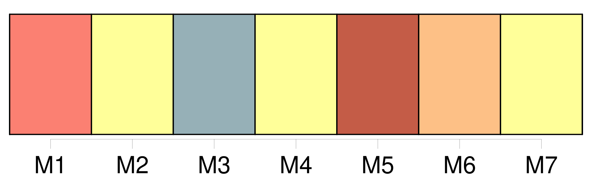
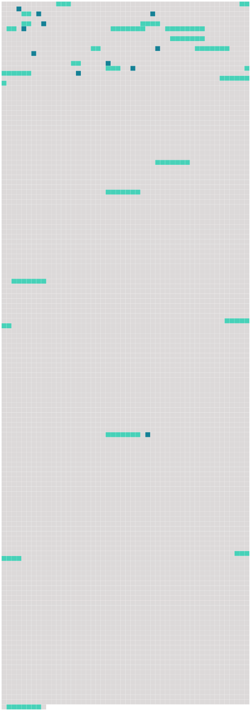

Longueur nb maillons : 33 mentions |
  |
Deux ans avant les événements racontés dans le précédent chapitre, [un petit paquebot] luttait contre les flots de l'Océan Pacifique. [1 phrases] [Le paquebot] luttait, et [luttait] bravement, mais le vent soufflait de l'ouest, causant un épouvantable roulis. [1 phrases]
On pouvait voir à l'arrière [du bateau] , [son] nom, écrit en larges lettres noires, sur le bois peinturé en blanc : « Queen of the Waves », [il] appartenait à une compagnie de San-Francisco. [3 phrases] [Le paquebot] continuait toujours [son] affreux roulis.
Tout à coup, une énorme masse d'eau de mer envahit le pont du « [Queen of the Waves] », éteignant les feux, et causant de légères explosions. Une panique était à craindre, car [le paquebot] , [dont] le gouvernail fonctionnait à peine, dans cette tourmente, ne parvenait pas à se maintenir. [Le « Queen of the Waves »] n'était plus qu' [une épave, ballottée de tribord à bâbord] [8 phrases] » Le pont [du « Queen of the Waves »] se couvrit de passagers à l'instant, et à une distance de cinq milles, à peu près, ils purent voir se dessiner une sorte de promontoire. [4 phrases] [Le bateau] n'était plus qu'à un mille de terre, quand [il] donna contre un récif. Aussitôt, [le « Queen of the Waves »] se coucha sur le flanc, et on comprit qu' [il] ne se relèverait plus. [3 phrases]
C'était un grand malheur, car, si on parvenait à dégager [le paquebot] , comment parviendrait -on à [lui] faire reprendre la mer, sans capitaine et sans matelots! [2 phrases] Quelques-uns des naufragés se dévouèrent : ils firent plusieurs voyages [au bateau échoué] , et [en] rapportèrent des provisions, des couvertures, des armes, etc.
Ils firent bien, car deux heures plus tard, [le « Queen of the Waves »] se brisait contre les récifs, et il n' [en] resta plus, bientôt, que des débris flottants, sur la mer en furie. [4 phrases] Cette terre, sur les côtes de laquelle [le « Queen of the Waves »] avait fait naufrage, était étrange : ce n'était partout qu'arbres renversés, excavations profondes ; en certains endroits, on eût dit que le granit, qui formait la base du sol, avait été ouvert, séparé en deux par quelque cataclysme. [32 phrases]
… on ne savait pas en quelle partie de l'Océan on se trouvait, [le « Queen of the Waves »] s'étant échoué, après avoir battu la mer comme une épave. [8 phrases] Ils avaient la conviction que les naufragés [du « Queen of the Waves »] étaient voués à une mort certaine, sur ce rocher désert. [33 phrases]
» [10 phrases]
» [51 phrases] Affolé par la nouvelle, je décidai de fuir la juste colère de celui que j'avais trahi, et je pris passage à bord [du « Queen of the Waves »] , [qui] fit naufrage sur les côtes d'une île inconnue. [60 phrases]
» [62 phrases] M. Duflot n'était pas un naufragé [du « Queen of the Waves »] |
 |
La ressource peut être téléchargée sur la page Ortolang
Si vous avez des questions ou vous voyez des erreurs, merci d'envoyer un mail à silvia.federzoni89@gmail.com
Site développé par S. Federzoni (contact)